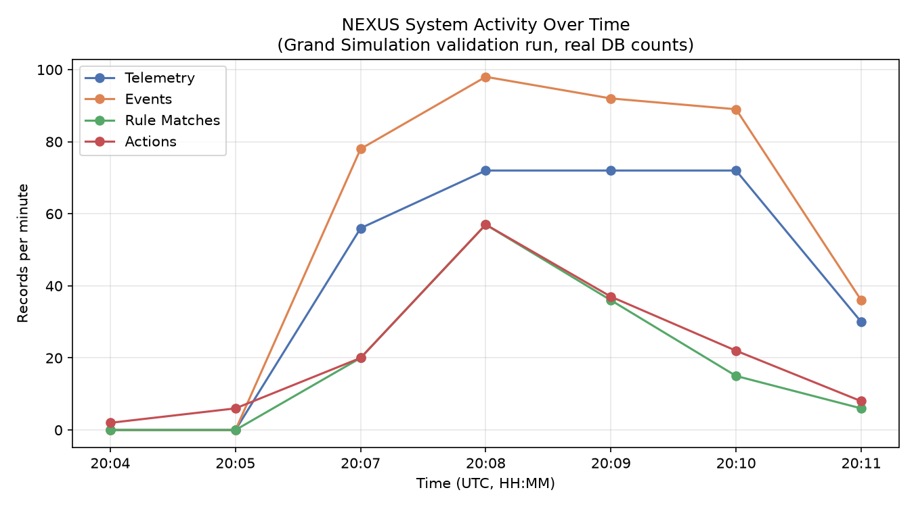
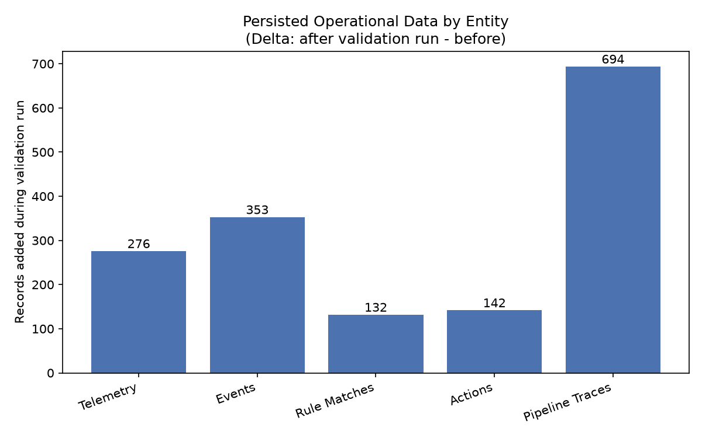
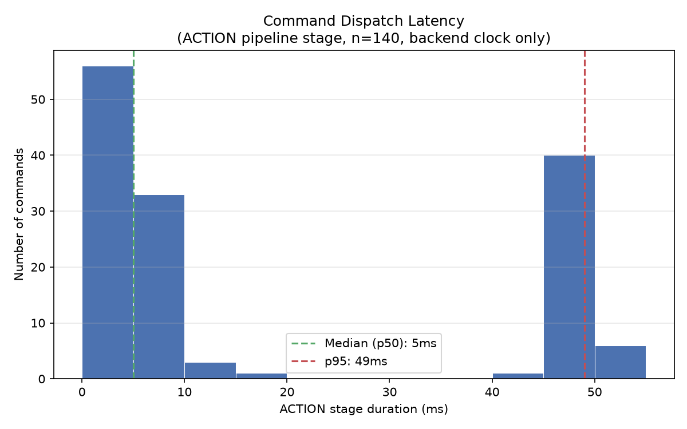

| Scenario | Expected | Observed | Result |
|---|---|---|---|
| Normal | Telemetry/twin update, no rule match | Telemetry published every ~5s across 6 read capabilities | PASS |
| High Temperature | TEMPERATURE > 35 → FAN ON | Rule evaluated against live twin state; FAN command ACCEPTED | PASS |
| Motion Detected | MOTION = true → LED ON | Rule matched 44× total; LED SET_STATE=true ACCEPTED | PASS |
| Gas Alert | GAS > 400 → BUZZER ON | Matched with real GAS readings >400 ppm | PASS |
| Gas + Motion (multi-cap) | GAS>500 & MOTION=true → Buzzer+Fan; GAS>700 → +Relay Ch1 | GAS=700.9, MOTION=true (independent timestamps) → both rules matched, all 3 commands ACCEPTED | PASS |
| Relay Control | Manual ch1-on / ch2-on / ch1-off accepted | 3 manual commands via REST, all SUCCESS | PASS |
| Servo Control | Manual 0°/90°/180° accepted | 3 manual commands, all SUCCESS | PASS |
| Button Press | BUTTON=true → LED ON | Rule matched with real BUTTON=true telemetry | PASS |
| Recovery | TEMPERATURE<26 → FAN OFF (auto); Buzzer/LED cleared | Recovery rule fired repeatedly; manual OFF commands ACCEPTED | PASS |
| Multi-Device Isolation | Device B rule must not fire from Device A telemetry | Negative control 43→43; positive control 43→44 | PASS |
| Restart Persistence | Rules/matches/actions/traces/twin survive restart | All counts identical before/after; twin state preserved | PASS |



Both conditions read from the live per-capability twin at different timestamps (20:10:05.912Z / 20:10:00.908Z) — proof the engine reasons over independently-updated state, not one lucky combined event. Result: RELAY CH1, BUZZER, FAN all commanded and ACCEPTED.
Negative control: MOTION=true published to a different device (ESP32-SIM-001) — match count unchanged.
Positive control: same signal published to the correct device (SAFETY-01) — match count incremented by exactly one.
| Capability | Command | Example value | Count | Status | ACK |
|---|---|---|---|---|---|
| LED | SET_STATE | true | 8 | SUCCESS | ACCEPTED |
| FAN | SET_STATE | true / false | 121 | SUCCESS | ACCEPTED |
| BUZZER | SET_STATE | true / false | 6 | SUCCESS | ACCEPTED |
| RELAY | SET_STATE | {channel:1, state:true} | 4 | SUCCESS | ACCEPTED |
| SERVO | SET_STATE | 0° / 90° / 180° | 3 | SUCCESS | ACCEPTED |
SIMULATED DEVICE ACK ≠ PHYSICAL ACTUATOR OUTCOME — these confirm the simulated ESP32 validated and applied each command internally, not a physical result.
| Component | Before | After | Result |
|---|---|---|---|
| Devices | 12 | 12 | PASS |
| Rules | 9 | 9 | PASS |
| Rule Matches | 826 | 826 | PASS |
| Action History | 893 | 893 | PASS |
| Pipeline Traces | 30,531 | 30,531 | PASS |
| Digital Twin | identical state, zero new telemetry | PASS | |
Every FACT claim is traceable to a persisted DB record via an evidenceRef — not a free-form LLM narrative, and no accuracy claim is made.
The full pipeline executes end-to-end from simulated telemetry through rule evaluation to acknowledged action — shown by a 694-record pipeline-trace delta with real timestamps, not asserted.
Multi-capability rules read independent capabilities (GAS, MOTION) from a shared per-device twin, evaluated at different timestamps — the engine reasons jointly without requiring both signals in one event.
Device-scoped rules are provably isolated: identical telemetry sent to a different device produced zero matches; the correctly-scoped device produced exactly one.
Command validation is capability-aware — booleans for LED/FAN/BUZZER, a bounded 0–180 integer for SERVO, a channel-checked object for RELAY — and every dispatched command in this run passed validation and was acknowledged.
Operational state (rules, matches, actions, traces, twin) is PostgreSQL-backed and survives a backend restart with zero measured loss.
action_history.ack_received_at is set from the simulated device's own whole-second-truncated ACK timestamp, not the backend's receipt time, so it cannot reliably measure command→ACK round-trip latency — the latency graph above uses the ACTION pipeline stage's backend-clock duration instead, a real but narrower metric (dispatch processing time only). Hardware status is tracked separately from this software validation: PIR, Push Button, LED and Buzzer are physically tested; BME280 is not yet verified, MQ-2 is parked, and Servo/Fan/Relay are not yet tested on real hardware. Every figure on this page is a simulated validation result.